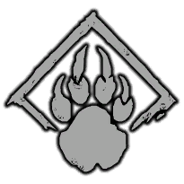
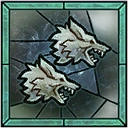
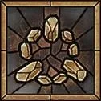
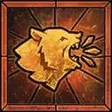
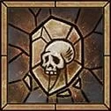
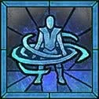
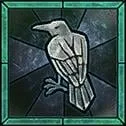

H
ElmoHeir of PerditionElmo
Altar completo da build de companheiros, com a leitura visual adaptada para o seu layout e pronta para servir como modelo das próximas classes.
Aqui o setup fica isolado da página principal, com mais espaço para a arte central, itens laterais e leitura da build sem competir com as outras classes.

Build ritualizada com foco em companheiros, sustain defensivo e presença constante em conteúdo de endgame.





